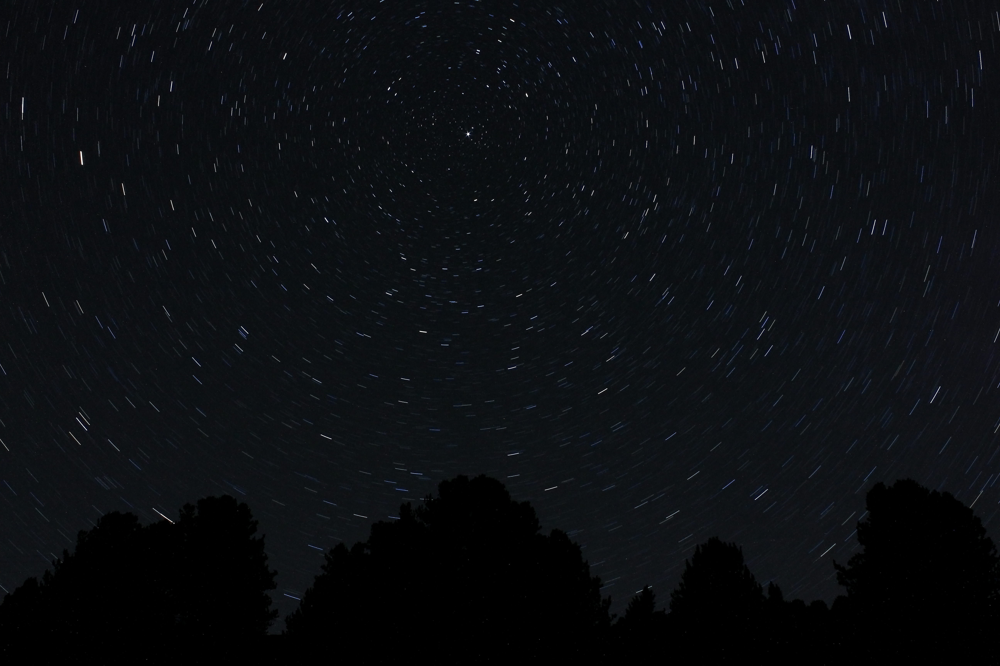
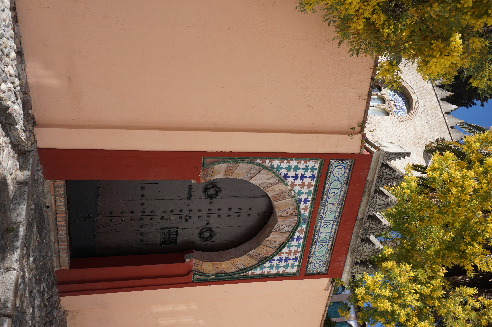
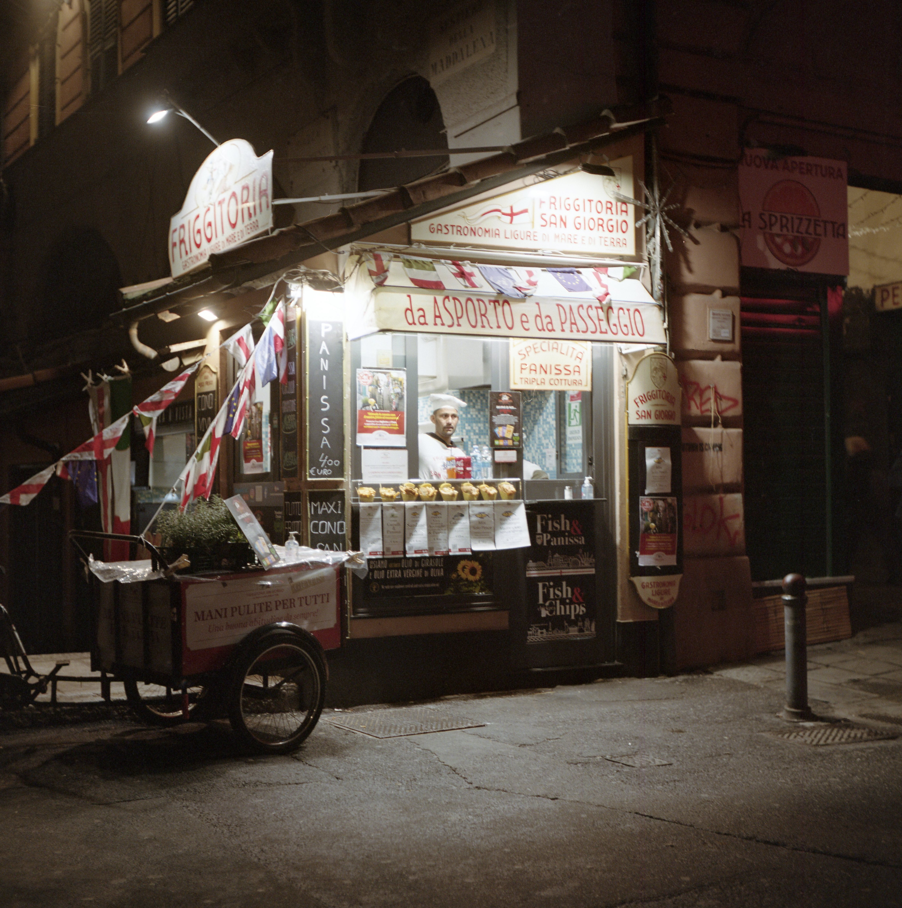

01 / PHENOMENOLOGY
Higgs & new physics
Investigating exotic Higgs decay channels, including H → Za, and the possible traces of physics beyond the Standard Model.
Hello, I'm Alessandro — a physicist interested in what the universe is made of, and in the little things that make living in it worthwhile.
My academic interests lie in high-energy physics, quantum field theory and Higgs phenomenology. I use Monte Carlo simulations, jet substructure and machine learning to explore signatures of physics beyond the Standard Model.
 Physicist, viol player & cat person
Physicist, viol player & cat person
My work sits where theoretical ideas meet simulations, reconstruction and data-driven techniques.
Investigating exotic Higgs decay channels, including H → Za, and the possible traces of physics beyond the Standard Model.
Generating and studying signal and background samples with Powheg, Pythia8 and Herwig7, then modelling detector response with Delphes.
Applying regression and classification neural networks, jet-tagging variables and systematic-uncertainty studies to particle-physics analyses.
My Master's thesis, A Phenomenological Study for H → Za Searches, explored an exotic Higgs decay with a pipeline connecting event generation, detector simulation, jet reconstruction and machine learning.
I compared Pythia8 and Herwig7 to investigate generator-modelling differences, studied jets using FastJet and SoftDrop, and developed a two-stage neural-network approach combining regression with classification.
ROOT-based analysis helped assess theoretical systematics and classifier performance.
My next academic chapter is doctoral research. The specific focus of my PhD is still to be defined, and I am looking forward to seeing where the questions lead.
I bring a background in high-energy physics, Higgs phenomenology, Monte Carlo simulation and machine learning.
Whatever direction the project takes, I hope to keep working at the intersection of fundamental ideas and the tools we use to test them.
I believe physics becomes even more exciting when you get to share it. Alongside research, I've enjoyed helping students and the public encounter scientific ideas firsthand.
Thesis on phenomenological searches for H → Za, combining simulation, jet analysis and machine learning.
Oral presentation: A Phenomenological Study for H → Za Searches, with S. Carrà, D. Rebuzzi and G. Stagnitto.
Supporting students as they explore particle physics through hands-on analysis activities.
Working with schools and teachers on physics laboratory activities.
Scientific explainer for public engagement activities covering astronomy, physics and everyday scientific phenomena.
Co-author of a manuscript in preparation about the scientific method in the kitchen. A related talk was accepted at GIREP 2026.
Undergraduate studies in physics, establishing the foundations for my later work in high-energy physics and phenomenology.

My furriend, companion and unofficial supervisor.
There's a lot of physics on this website, but Maxwell deserves a prominent place too. Cats are a big part of my life, and he's the one currently keeping me company.
His contributions to theoretical physics remain under review. His contributions to making a house feel like home are beyond question.
I'm happiest when I'm learning something new, making something with my hands, or disappearing down an unexpected rabbit hole.
I play the viola da gamba and love English and French Baroque music. Tobias Hume's writing for the viol fascinates me; Marin Marais's expressive restraint is just as captivating.
Photography is my excuse to look more closely. I shoot on both analog film and digital, moving between my 1958 Rolleicord 3A and my Sony Alpha 3000.
I love photographing people, landscapes, ordinary scenes and unexpected details.
Some favourites are Tuesdays with Morrie, the Dune saga and Heartstopper.
I like books that move me, transport me, or change the way I look at something.
Apple pie is my favourite thing to bake: warm apples and cinnamon sugar are hard to beat. Roasted chicken and lasagna are close contenders when I'm cooking something savoury.
I love cozy games, horror games and creepypastas. I'm also happy to hear about TikTok drama despite not having an account. Gab Smolders is my favourite YouTuber.
Travel challenges me in the best possible way. New places, different routines and — perhaps most importantly — discovering what people eat are all part of the adventure.
I work in mixed media, alternating between analog film and digital photography. I like how each medium changes the way I see people, places and everyday details.
My vintage film camera. Shooting analog invites me to slow down, make choices carefully and enjoy the process as much as the result.
My digital companion for exploring light, framing and spontaneous moments — another way of collecting the scenes that catch my eye.




Research, science outreach, Baroque music, books, food, photography — or cats. I'm always glad to hear from curious people.